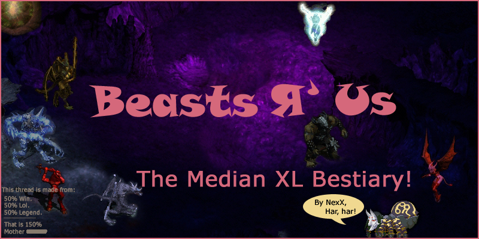

Welcome to the Median XL Bestiary! Just two notes about bosses, though: -Super Unique quest bosses can’t be physically immune.
-Super Unique Bosses have two preset unique modifers and get two extra random ones, here you have the full list and what each of them does:Extra Strong-
Extra Fast-
Cursed-
Magic Resistant-
Fire Enchanted- (Not Random)
Lightning Enchanted- (Not Random)
Cold Enchanted- (Not Random)
Mana Burn-
Teleportation-
Spectral Hit-
Multiple Shots- (Not Random)
Stone Skin-
-Only the list is done by now, some have changed in MXL, so I have to make sure of a few things. Kthx.
-Lazy NexX.
:P
Now, I tend to avoid the use of abreviations to make things more comprehensible. But I also have the bad habit of sleeping, so I did use them. A lot of times:
Acronyms, Concepts and Build-names of Median XL, by Sing_In_Silence <- This, my dear reader, explains the meaning every single strange thing I say, like “mob” or ND.
Also extremely helpful, even though admitedly less related, are the Less Frequently Asked Questions, by Sing_In_Silence too.
-Several rigorous scientific studies have proven that the levels of win of an average subject increase almost exponentially while thoroughly reading the LFAQ-
To do list:
Done stuff list: Because I’m not always such a lazy bum.
-Succesfully reposted with space enough :).
-All five Acts’ normal population complete.
-Bosses completed up tp Act 4.
-Nice poster for the Bestiary, Act signs and more random grfx added. Kthx.
-Monters rearranged per type.
-Hunted lotsa taepoz down. Thanks go to Sing_In_Silence, Astfgl, phenox_1707 and Ilikeapples/his incarnation.
To do list: Because sometimes, most in fact, I am a very lazy bum.
-Adding eye candy. For the sweet mother of Satan, that is BORING!
-Omaigawd hntin’ MOAR TAEPOZ!
-Making Heroic monsters and bosses section.
-Making a section for monsters and bosses in uberquests.
-Counting all of the monsters so that I can state that “in Median XL you can come across ???? different monsters”. Possibly while I’m at it, I’ll also count the ones with new animations. –Actually Word will do wonders with this :P.
-A census on Miss Cellaneous’ Dominions (Exploitables, Rathma Priests, Sacrificial -Lambs...)
----Sleeping.
-Allied Monsters Section.
That’s it. Now GTFOH. :P
^^